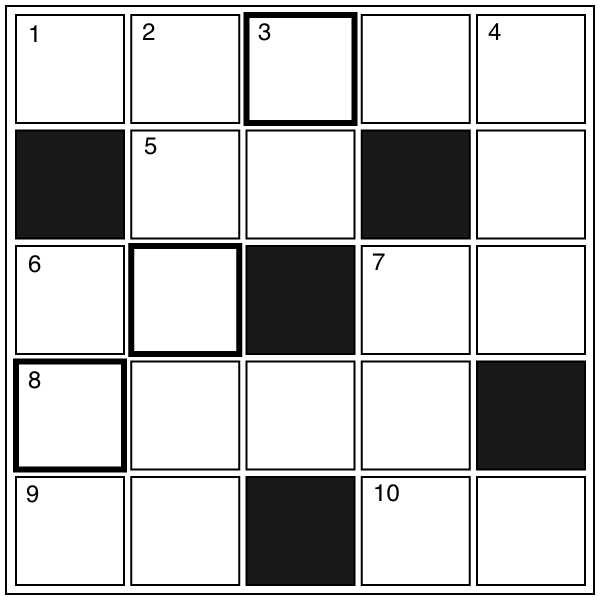

クロスワード
【→ PDF（印刷用）】

- タテのカギ
-
- ２. 小学校にあがる前の子供が通うところ。
- ３. 地面の表面に多く見られる物体。
- ４. 『カー(car)』は和語で？
- ６. 主任と違って○○○がいい。
- ７. 他の人に知られないようにするもの。
- ヨコのカギ
-
- １. 90度のこと。
- ５. 『外』の反対は？
- ６. 秘密○○。沖縄にはアメリカの○○がある。
- ７. 仕事がない自由な時間。
- ８. 「最近、○○○○が薄くなってきて……。」
- ９. 日本のお金。
- 10. 針と糸で魚をとること。
【→ 解答を見る】